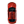

<!DOCTYPE html>
<html lang="en">
<head>
    <meta charset="UTF-8">
    <title>T1</title>
    <!--<link rel="stylesheet" href="./lib/g.css">-->
    <link rel="stylesheet" type="text/css" href="./js/OpenLayers/css/ol.css" />
    <script src="./js/OpenLayers/build/ol.js" type="text/javascript"></script>
    <script type="text/javascript" src="./js/jquery-1.11.3.min.js"></script>
    <style>
        #map-container{
            width: 900px;
            height: 600px;
            border: 1px solid #999;
            positon:absolute;
        }
        .ol-full-screen{
            transform: translate(0,50px);
            /*background: url("./images/taxi.png");*/
        }
    </style>
</head>
<body>
<div id="mapContainer"></div>
<div id="map-container"></div>
</body>
<script>

    //全屏控件
    var fullScreenControl = new ol.control.FullScreen();
    // 此时类库加载完成

    var saoguan = new ol.Feature({
        //geometry:new ol.geom.Point(ol.proj.fromLonLat([113.5991,24.8166]))
        geometry:new ol.geom.Point([13110795.607205058,4719031.500290775])
    });
    saoguan.setStyle(new ol.style.Style({

            /*image:new ol.style.Icon({
                //color:'#4271AE',
                imgSize: [24, 66],
                rotation: Math.PI/180 * Number(180),
                //src:'./images/taxi.png',
                src:'./images/ship.svg',
                //src:'./images/图标设.svg',
                scale:2
            }),*/
            image: new ol.style.Icon({
                src: './images/ship.svg',
                imgSize: [180, 830] ,
                scale:0.1,
                rotation: Math.PI/180 * Number(26),
            })
        })
    );
    var source = new ol.source.Vector({
        features:[saoguan]
    });
    var layer = new ol.layer.Vector({
        source: source
    });

    var url_new = 'https://geohey.com/s/mapviz/7c7e4a845b0e4ee0a0fdecf9289430b4/' +
        '/mapserver/{z}/{x}/{y}.png?ak=OGJkMGQwNTVlNzYzNDA0NmIwNDYxZDY4YjQwYmJlYzc';
    ajax_geo_map('https://geohey.com/s/mapviz/7c7e4a845b0e4ee0a0fdecf9289430b4/mapserver/config?ak=OGJkMGQwNTVlNzYzNDA0NmIwNDYxZDY4YjQwYmJlYzc','7c7e4a845b0e4ee0a0fdecf9289430b4')
    function ajax_geo_map(url,uid) {
        $.ajax({
            type:"POST",
            url:url,
            async: false,
            cache: true,
            dataType: 'json',
            data:{uid:uid},
            success: function (json) {
                console.log(json)
            },
        })
    }
    var layers = [
        //谷歌影像底图
        new ol.layer.Tile({
            source: new ol.source.XYZ({
                url:'http://mt2.google.cn/vt/lyrs=y&hl=zh-CN&gl=CN&src=app&x={x}&y={y}&z={z}&s=G'//谷歌卫星地图 混合
            }),
            projection: 'EPSG:3857'
        }),
        layer,
        new ol.layer.Tile({
            source: new ol.source.XYZ({
                url: url_new, //添加GeoHey地图
                tilePixelRatio: 2, //表示加载高清图显示
                crossOrigin:null,
            })
        }),
    ];

    var map1 = new ol.Map({
        layers: layers,
        target: 'map-container',
        view: new ol.View({
            center: [13110795.607205058,4719031.500290665],
            zoom: 15
        })
    });
    map1.addControl(new ol.control.Rotate({
        autoHide: false
    }));
    //全屏
    map1.addControl(fullScreenControl);
    $('.ol-full-screen-false').html('')

    map1.zoomend = function(evt){
        console.log('zoomend on resolution: ' + evt.map.getView().getResolution());
        console.log(1/evt.map.getView().getResolution())
        saoguan.getStyle().getImage().setScale((1/evt.map.getView().getResolution() )* 0.1);
        evt.map.once('moveend', function(evt) {
            map1.zoomend(evt);
        });
        layer.changed()
    }

    map1.getView().once('change:resolution',function(evt){
        map1.once('moveend',function(evt){
            //console.log('zoomend on resolution: ' + evt.map.getView().getResolution());
            map1.zoomend(evt);
        })
        layer.changed()
    });

</script>
</html>